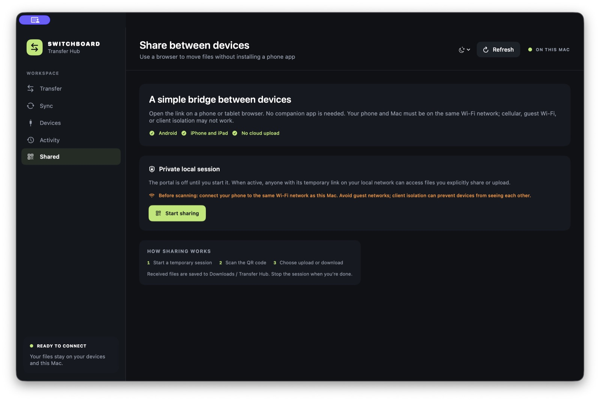

The one important thing: the phone and Mac must be connected to the same Wi-Fi network, like the same home Wi-Fi. A phone on cellular data cannot connect to the Mac’s sharing page.
Send Android photos to Mac over Wi-Fi
- Join the same Wi-Fi. Connect your Mac and Android phone to the same network name. Turn off cellular data on the phone for a moment if you are not sure.
- Open the sharing page on the Mac. Open Transfer Hub, click Shared in the left menu, then click Start sharing.
- Scan the code. Open the Camera app on your phone and point it at the QR code on the Mac. Tap the link that appears. If it does not scan, type the address shown in Transfer Hub into your phone's browser.
- Choose the files on the phone. On the webpage, select the photos or other files you want to send and wait for them to finish.
- Find them on the Mac. The received files appear in Downloads → Transfer Hub.
- Close the sharing page. Return to Transfer Hub and click Stop portal when you are finished.

Send files from Mac to Android
On the Mac, open the connected phone in Devices and click Upload files. Choose the files from your Mac. Then open or refresh the QR page on your phone and tap a file in the list to download it. The phone may ask you to confirm where it should save the download.
If the QR code opens a blank page or will not connect
- Check that both devices show the same Wi-Fi name. Home Wi-Fi usually works best.
- Turn off mobile data on the phone while testing, so it uses Wi-Fi.
- Avoid guest Wi-Fi. It often blocks devices from talking to one another.
- If you use a VPN, turn it off temporarily on both devices and try again.
- If the Mac asks whether Transfer Hub can accept a connection, allow it on your trusted home network.
- In the Mac app, stop sharing and start it again to show a fresh QR code.
Some office, school, hotel, and public Wi-Fi networks block this kind of connection. If it still does not work, a USB cable is the simplest backup option.
Are my files uploaded to the internet?
No SwitchBoard cloud account is involved. The phone sends files to the Mac over the local network. While the temporary sharing page is active, anyone who can access its link on that network may send files to the Mac or download files you chose to share. Use a trusted Wi-Fi network and stop the portal when you finish.
Can I use this with an iPhone?
The same browser page supports basic upload and download from an iPhone or iPad. It does not browse iPhone storage or automatically sync iOS folders.